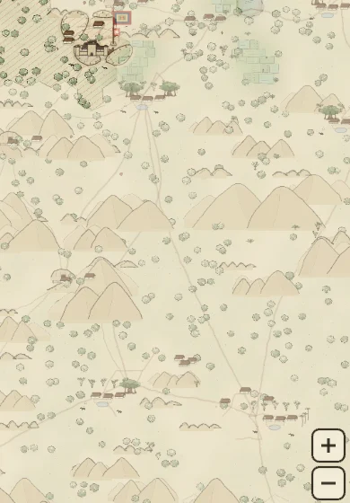
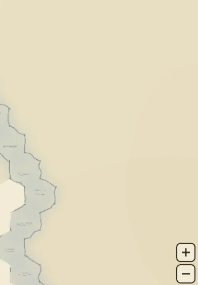
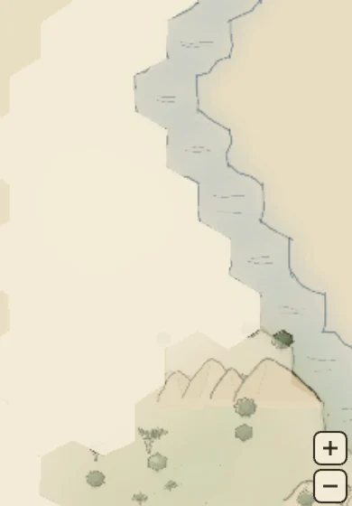
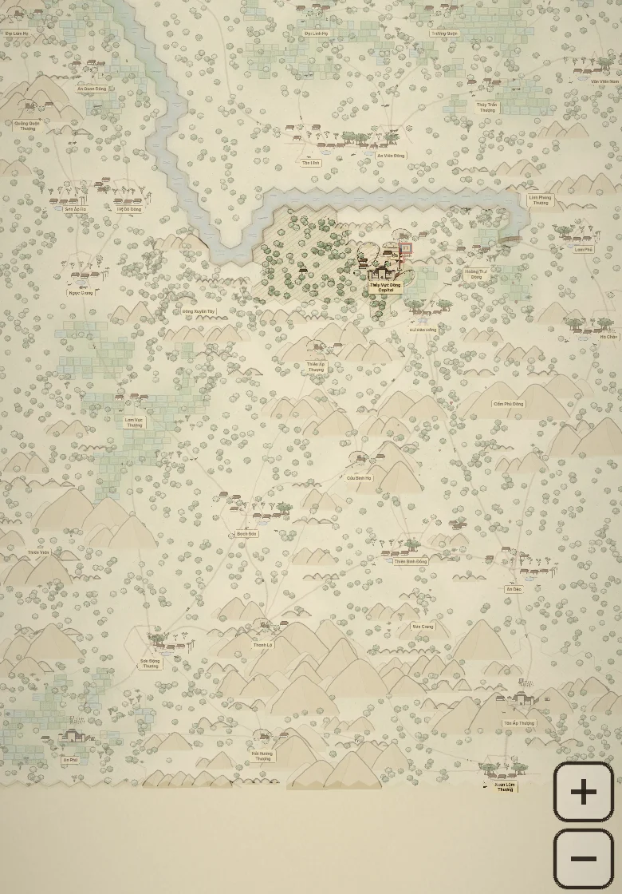
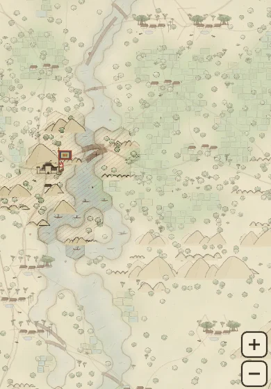
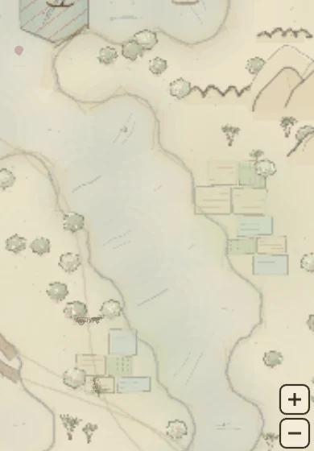
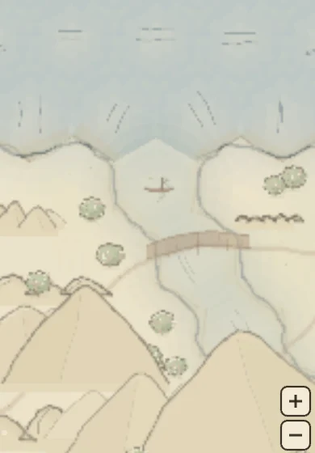

Map design · Mandate of Đại Việt
The realm is a river country with one river, no lakes, no streams and no bridges — and the water it does have is worth nothing to any province that touches it.
The finding
Driven in a real browser from test_scripts/, five seeds, campaign mode.
Every number below came out of the running game, not out of reading the source.
The generator carves exactly one thing: a 92-step random walk called
carveRiver, one hex wide, that turns ±1 direction with 35% probability per step
and stops wherever it runs out of steps or falls off the grid. It has no source, no mouth,
no downhill and no width. On top of that, applySeaBorders floods a four-hex band
along one edge of the map.
Because the river is carved before the sea band and both write the same
water terrain, they merge. The live campaign map contains
one connected water body of 157 hexes. There is no second body — which is
to say there is not, and structurally cannot be, a lake anywhere in the game.



The root cause
One line of generator behaviour makes TerrainSummary.water a field that can only
ever hold 0. Seven shipped mechanics read that field.
A province's terrain is counted in GameState.ts with a single loop:
if (tile.landId === template.id) summary[tile.terrain] += 1. Water hexes never
receive a landId, so that branch never fires for them. The counter is correct;
the input can never contain water. Confirmed on all 42 provinces across every seed tested.
| Site | Written intent | Actual |
|---|---|---|
ResourceSystem · harbour gate | Harbour needs a coastal or river tile | unbuildable, all 42 |
ResourceSystem · waterBonus | min(4, water × 1.2) food on every producer | 0.0 |
ResourceSystem · harborWater | Harbour supplies ride the local water bonus | 0.0 |
getLandAptitude · wet | +0.35 breadbasket, +0.45 trade — “irrigation is what makes a delta” | 0.00 |
WarSystem · terrainDefenseMultiplier | Rivers favour the defender, water × 0.7 | 0.0 |
movementConfig · TERRAIN_MOVE_COST.water | 2.2 — the slowest ground in the game | never averaged |
GameState · buildingCapacity | (hexes − water) / 7 — don't count the wet part | no-op subtraction |
The harbour cannot be built. Not in campaign, not in empire, not in ascent, not on any seed. It has a cost, an upkeep, an output of 7 gold and 5 supplies, an era gate, a label in both language catalogs, and a refusal string — “Needs a coastal or river tile” — that no province in the game can ever satisfy.
Three more things exist only as names: River Marines
(Thủy Binh Sông) is a unit with a speed of 0.9 and no river behaviour of any kind;
bridge, ford, ferry, lake, stream, delta and estuary return zero grep hits
across all of src/; and the river severs nothing, because the
walk stops mid-map, so the land graph stays a single connected component of 42 and provinces
simply route around its end.
The expected map
The proposed generator is written and running. It reimplements the shipped pipeline exactly — at the live map seed it reproduces the real game's numbers to the tile — then replaces the one random walk with a drainage system.
A course now starts on high ground, runs downhill, gathers flow as it goes, pools into a
lake where it stalls in a basin, takes tributaries, widens
from stream to river as its flow accumulates, and ends in
the sea as a delta. Inland water is claimed by the province it runs through,
so terrainSummary.water stops being structurally zero.


The proposed hydrology was computed offline and painted onto the running game's
hexTiles, then redrawn by the actual Đông Hồ renderer. So the shapes are real
output, not an illustration — but the paint is still today's: every kind of water is
the same pigment, the banks are still hex edges, and the flow ticks still run horizontally.
That is what the art direction section fixes.
This is the same generator, compiled into the page. Switch between the two pipelines and reseed to see how the drainage varies — the schematic colours each water kind separately, which the game's renderer does not yet do.
| Pipeline | Water | Share | Lakes | Streams | Prov. with water | Can build harbour | No outlet to sea |
|---|---|---|---|---|---|---|---|
| Current · seed 1337 | 126 | 8.1% | 0 | 0 | 0 / 42 | 6 | 1 |
| Current · seed 42 | 204 | 13.1% | 0 | 0 | 0 / 42 | 5 | 1 |
| Current · seed 7 | 121 | 7.8% | 0 | 0 | 0 / 42 | 4 | 0 |
| Current · live map | 157 | 10.1% | 0 | 0 | 0 / 42 | 6 | 0 |
| Proposed · seed 1337 | 280 | 17.9% | 2 | 23 | 32 / 42 | 33 | 0 |
| Proposed · seed 42 | 310 | 19.9% | 2 | 29 | 30 / 42 | 31 | 0 |
| Proposed · seed 7 | 270 | 17.3% | 4 | 28 | 25 / 42 | 27 | 0 |
| Proposed · live map | 274 | 17.6% | 3 | 28 | 26 / 42 | 28 | 0 |
The first version of this generator still produced watercourses that stopped in a field — the same fault in a nicer shape. So after carving, every body of water that does not reach the sea has an outlet cut for it along the sea-distance gradient. On all five seeds the result is one connected network with zero bodies lacking an outlet: every drop of water on the map drains somewhere, which is what makes it read as a country rather than as decoration.
Water sits at 17–20% of the sheet against today's 8–13%. That is one constant away from whatever density you want — the widening probability and the trunk count are the two dials.
Run against the live map's own seed, the prototype's current pipeline reproduces the real game exactly: 157 water hexes, one body, zero lakes, 0 of 42 provinces owning water, 157 unclaimed tiles. That match is what makes the proposed column worth reading.
The renderer
The first renders showed trees growing out of the water and limestone massifs lying across it. That was not the new hydrology's doing — it is a shipped fault the new hydrology dragged into the light. It is now fixed, and the numbers below are before and after.
Four independent layers put things in the water, and each had to be fixed on its own terms. Three of them made the same mistake in different clothes: they tested where a thing was anchored, when what matters is where it is drawn.
distance = √rand × tileSize × 1.12 from its own cell centre — but a hex's
inradius is only 0.866 tile radii. So roughly 40% of every prop on
the map lands outside the cell that spawned it. That is deliberate: it is what
stops the scatter reading as a grid. The problem is the guard list. keepClear
protects fortress plazas, shrines and mountain faces — “the rock keeps its own
ground” — and nobody ever added water to it.
planRanges merges a run of hill or
mountain cells into one massif that spans the whole run and deliberately bleeds past its
cells. It never consults water, so a range whose run ends at a bank simply carries on
across the channel.
getSeatCentre
already skips water and mountain, but the cluster drawn around the seat — houses, grove,
name plate — spreads well past its own hex, so a town seated on the bank put its roofs in
the channel.
| Measure | Shipped renderer | New rivers, before the fix | New rivers, after the fix |
|---|---|---|---|
| Scattered props planned | 3,968 | 3,732 | 3,634 |
| Props standing on a water hex | 33 (0.8%) | 81 (2.2%) | 0 |
| Nearest prop to a water hex centre | — | — | 1.01 tile radii |
| Paddy plots over the channel | yes | yes | none |
| Village seats on the bank | yes | yes | set back one hex |
| Hill and mountain ranges | 156 | 144 | 144 |
| Ranges lying across water | 2 (1.3%) | 19 (13.2%) | 11 (7.6%) |
| Water cells a massif covers | 10 | 224 | 88 |
33 props and 2 massifs already stand in the water today. It goes unnoticed because the only water is a band at the edge of the map with almost nothing beside it. Route rivers through settled, wooded, hilly country and props on water rise 2.5× while massifs across water rise nearly tenfold — one range in eight on the whole map.
Water joined keepClear at the radius the mountains already
claim — tileSize × 0.95, and the comment beside the rock says exactly why:
“the rock keeps its own ground.” Now so does the water.
But clearing the anchor was not enough. That alone took props on water from
81 to 4, and the river still had trees hanging over it — because a tree whose trunk
sits two units outside the bank is drawn many times wider than that. The thinning
pass already computes each prop's own reach for spacing; water zones now test against that
reach instead of the bare centre. Props on water: 0, and the nearest one stands a
full tile radius clear of the channel.
A massif now stops at the bank. A range pulls its horizontal bleed in from
1.1 tile radii to 0.12 where the cell beyond its run is wet, and drops to 45% height where
the rows it would rise over are water. Ranges across water fall from 19 to 11, and the water
they cover from 224 cells to 88.
The paddy stops there too. Water now vetoes a plot the way paddy grants it
— and vetoes it on the plot's body, half a plot-width past the water's own reach, because
testing the centre left half a field lying in the river. Same mistake, same shape of fix.
A village stands back from the water. A seat now prefers a tile with no wet
neighbour at all, falling back to the waterline only where a province has nowhere else to
stand — so the cluster has room to spread without wading in.
The remaining 11 are worth a second pass. They are massifs deep enough to rise over two rows, where a single height cap is too blunt an instrument; clipping the drawn silhouette against the wet/dry boundary would finish the job properly.
Severance
It depends entirely on one decision, and I had assumed the answer. Measured, the assumption was wrong — so here is what actually happens, and which way I would go.
An earlier version of this document claimed that once a river reaches the sea it “starts
cutting the land graph in two.” That is not automatic. Whether a river severs anything is
decided by a single line in growZones: may a province grow across
water? Both answers are defensible and they produce completely different games.
| Policy | Regions | Severed pairs | Unreachable pairs | Bridge sites | Bridges needed |
|---|---|---|---|---|---|
| Permeable — a province straddles its river | 1 | 0 – 7 | 0 | 63 – 75 | 0 |
| Barrier — a province stops at the bank | 2 – 4 | 18 – 32 | 6 – 23 | 90 – 122 | 1 – 3 |
Under permeable growth the realm stays one connected piece on every seed tested. A few facing pairs lose their direct link, but every detour is exactly two hops — through one intermediate province. Rivers are scenery with a food bonus, and a bridge is a convenience.
Under barrier growth the map breaks into two to four regions. On the live map seed the split is 26 / 12 / 4 — a heartland, a far bank, and a pocket — and 16 of 42 provinces sit across the water from the capital's region. One to three bridges rejoin the realm, and there are 90–122 places one could physically stand.
Barrier is the better game and the truer history. Rivers were administrative boundaries in the delta, and the ferry-and-bridge network is what made the country governable at all. It also makes every other water mechanic matter: a chokepoint is only a chokepoint if going round is not an option, and River Marines are only interesting if the crossing is scarce.
On one seed the split came out 39 / 1 / 1 / 1 — three provinces each cut off alone. A lone unreachable province is a broken game, not an interesting one. So world-gen must guarantee at least one crossing per region, placed where a road already wants to cross, and the check belongs in a harness: assert that the land graph plus its bridges is a single component on every seed before the map is ever handed to a player.
The realm ships permeable. The argument for barrier stands on its merits and is left above unaltered, but it buys its drama with the riskiest change in the whole design: armies would have to path through crossings, which puts the autopilot, the AI and the acquisition logic in scope, and world-gen would have to guarantee a bridge per region or a province becomes unreachable — one seed already produced 39 / 1 / 1 / 1.
Permeable keeps the land graph whole, so none of that is touched. Water still counts for
yields, defence and harbours; a bridge is still drawn wherever a road crosses, and still
earns its toll and its defender's edge — it is simply no longer the thing holding the country
together. Barrier remains available behind one flag in growZones if the appetite
for it returns.
Switch the preview above to Regions to see what barrier would do: each colour is a set of provinces an army can reach without crossing water, and each dark dot is a place a bridge would rejoin two of them.
The economy
In a wet-rice civilisation water is the limiting factor of food, and food is the limiting factor of everything else. Modelling it as “+4 food if there's a river” gets the causality backwards.
The chain that ran Đại Việt is short and it is not about gold: water → rice → people → soldiers. Irrigated paddy feeds more people per hectare than any other pre-modern agriculture, which is why the Red River delta became one of the densest rural regions on earth, and why a dynasty's power was counted in registered households. Gold came third, behind grain and behind men.
So the proposal is not an additive bonus. It is a multiplier on the ground that is already under crop, plus a population term, plus a transport term — and a real downside, because the same river that feeds the province also drowns it.
Small, local, reliable. Feeds a village's paddy and turns a mill. Carries no freight and never drowns anyone.
Carries silt, carries boats, carries floods. The high-variance water: the largest upside on the map and the only recurring disaster.
Still water. Fish, lotus and water chestnut, and — the part that matters — a reservoir that holds through the dry months.
Salt, sea fish and ocean trade — but salt intrusion ruins paddy, so a coast without a river behind it is poorer ground, not richer.
Where the river meets the sea: the richest soil there is, the best port site, and the most exposed ground on the map. The province worth fighting a war over.
No water at all. Rice will not grow without irrigation, so the province falls back to dry crop and stays thin — which is what makes the wet ground worth taking.
A farm outputs food: 9 at level 1. Irrigation multiplies that, but only in
proportion to how much of the province is actually under crop — a river through a mountain
province gives transport, not grain.
| Quantity | Rule |
|---|---|
| Irrigation | stream 0.35 · river 0.70 · delta 0.90, then +0.20 lakeside, −0.25 coast without a river, clamped to 0 … 1.0 |
| Seated | true where the province's settlement sits on its water — the town has taken the waterfront |
| Navigable | true where the water is river-grade and its body reaches the sea. A stream is never navigable at any length. |
| Food | farmFood × (1 + irrigation × cropShare × (seated ? 0.6 : 1)) where cropShare = (riceFields + fields) / workable |
| People | popGrowth × (1 + 0.6 × irrigation) — the term that turns wet ground into soldiers two steps later |
| Supplies | +min(4, riverHexes × 0.5) river freight; lake fishing +1; army upkeep ×0.85 on a river-connected province |
| Gold | seated && navigable → harbour unlocked, market ×1.35; seated alone → market ×1.10, the ferry and the mill; otherwise nothing — an empty bank earns no coin |
| Flood | each summer on an undiked river province: P = min(0.45, 0.15 + 0.05 × riverHexes) → food −35% for the year, population −2%, stability −6 |
| Silt | a flood leaves silt: irrigation +0.10 the following year, up to the clamp |
| Drought | each winter, a cropped province with no lake and no dike: food −20% for the season |
A river is not worth a fixed amount. It is worth whatever the ground beside it is set up to take from it — and a province can only take one of the two. That is the rule that makes settlement placement a decision rather than a formality.
| The ground | What the water does | Pays in |
|---|---|---|
| Town on a navigable river | The waterfront becomes a landing. Freight moves by boat, and a hull that can reach the river mouth can reach anywhere on the coast. This is the only ground a harbour can stand on. | Gold + supplies |
| Town on water with no way to the sea | A ferry, a mill, a fishing landing — real, local, and small. No hull leaves the province. | A little gold |
| River with no town on it | Nobody has taken the waterfront, so all of it goes to the fields. This is the paddy at full irrigation. | Food |
| Stream, town or no town | Too small to float anything. A stream only ever feeds the crop — which is why it is the safe water and never the rich water. | Food |
You cannot have the port and the full paddy from the same stretch of river.
Seating a town on the water turns grain into gold; leaving the bank empty keeps the grain.
In formula terms the irrigation multiplier takes a ×0.6 where a settlement sits
on the water, and the province gains the harbour and a ×1.35 on market gold in
exchange. A stream never qualifies for either — no hull floats on it — so it pays its food
whatever you build.
Navigable is a property of the water body, traced once at world-gen: does this channel reach the sea, and is it river-grade rather than stream-grade? With the drainage guarantee every body drains somewhere, so the question that actually bites is the second one.
Same size, same two level-1 farms (18 food before water), half the workable ground under crop. Nothing but the water differs.
| Province | Irrigation | Food | Pop. growth | Supplies | Standing risk |
|---|---|---|---|---|---|
| Dry upland — no water | 0.00 | 18 | ×1.00 | — | Drought every winter |
| Coastal, no river — salt | −0.25 | 16 | ×1.00 | +2 salt | Drought; poor paddy |
| Stream village | 0.35 | 21 | ×1.21 | — | None |
| River province | 0.70 | 24 | ×1.42 | +3 | Flood, ~30%/yr undiked |
| Delta + lake | 1.00 | 27 | ×1.60 | +4 | Flood, surge, invasion |
The dike is not a straight upgrade — and that is the point. Historically,
dikes stopped the flood and stopped the silt that made the delta fertile in the first
place; over centuries the Red River's diked bed rose above the plain behind it. So in game
terms a dike should remove the flood, remove the +0.10 silt renewal, cost gold to
raise, and cost people to keep — corvée labour was the real price of the dike
system. Safety, paid for in fertility and in men. That is a genuine choice rather than a stat.
At the table
The province panel is where all of this becomes legible. Today it lists yields with no explanation of where they came from; with water in play it can show the reason.
Delta province. Everything good and everything dangerous in one place.
Stream village. The safe, unspectacular middle of the map.
Dry upland. Rich in ore, thin in grain — and the refusal string finally tells the truth.
The paddy already runs a five-stage water cycle in season.ts. This is the same idea
one scale up: the river's level turns with the monsoon, never its colour.
Transplanting. Streams matter most — the small reliable water is what fills the nursery beds. Fords still open.
Flood risk peaks on undiked river provinces. Rivers are fully navigable: freight is cheapest now. Fords close.
Water recedes, the silt is already down. Grain lands. The one season where a flooded province learns what it cost.
Drought bites where there is no lake and no dike-fed canal. Sandbars show. Fords reopen — and armies cross where they could not in summer.
The last line of winter is the whole reason to build this: a ford that is open in the dry season and closed in the flood makes the calendar a strategic input. Campaigning season stops being flavour text.
The grounding
Not decoration. In the record the water is the state's core administrative problem, the village's social centre, the army's best weapon, and the economy's road.
Đồng bằng sông Hồng
Some 15,000 km², almost all of it under rice, and the cradle of Vietnamese civilization. Settlement, village form and stable agriculture all follow the water first. A map where the fertile ground is not wet ground has the causality backwards.
Đê điều · Đỉnh Nhĩ
Flood control and irrigation were communal projects and functions of the throne. Repeated flooding and the need to protect the citadel drove the consolidation of the dike system in the mid-13th century — paid for in conscripted labour.
Cây đa, bến nước, sân đình
Banyan tree, water landing, communal-house yard — the three things that identify a village in the Vietnamese imagination. The game draws the banyan and the đình. It is missing the third leg of the triangle.
Bạch Đằng, 938 · 981 · 1288
Stakes driven into the bed at low tide, a feigned retreat drawing the fleet in at high water, the tide falling on a trapped enemy — perhaps 400 vessels destroyed in 1288. The most celebrated victories in Vietnamese history are terrain used as a weapon.
Vân Đồn · Phố Hiến
By the 12th century Đại Việt was developing waterways to move goods, and its royal ports drew merchants from across maritime Asia. The code already knows: “a river or a coast is a road that costs nothing to keep.”
Hồng Đức bản đồ, 1490
Traditional Vietnamese cartography organises the country around waterways and routes rather than a survey grid — the frame is a journey between landmarks. That argues for rivers that visibly go somewhere.
The build
Adding stream, river and lake as full terrain types
means walking the twelve-step terrain recipe three times for what is one substance. Cheaper
and truer: keep water as the single terrain and add a kind beside it.
HexTile gains waterKind?: 'sea' | 'river' | 'stream' | 'lake'. One optional field, no change to the HexTerrainType union, no compile break anywhere.TerrainSummary gains a coast count from hexes that border unclaimed sea — giving the harbour the two ways to qualify its own refusal string already promises.src/map/hexMapGenerator.ts — tag kinds during carve; claim inland water in growZonessrc/state/types.ts + src/state/GameState.ts — the coast field, and both copies of the summary loopsrc/systems/ResourceSystem.ts — harbour gate reads water + coast
Claiming water changes computeNeighbors: two provinces facing each other across
a claimed river become adjacent again, and buildingCapacity shifts on every
riverside province. Claim the river hexes but keep them out of the adjacency pass, or the
river stops being a barrier the moment it becomes an asset.


Under the barrier policy the rivers leave the realm in two to four regions, with 16 of 42 provinces across the water from the capital on the live seed. Crossings are what make it one country again — and the most interesting thing water can add to this game.
buildRoadCurve draws a spline between neighbouring provinces; TrafficRenderer samples it against a bucketed water index and puts a crossing on the wet run. The road already tells you where a bridge belongs. 28 bridges on the live map, from 44 wet spans.src/map/roadCurve.ts + src/map/hexMapGenerator.ts — crossing sitessrc/systems/WarSystem.ts — crossing penalty; src/game/movementConfig.ts — marine exemptionsrc/systems/LandSystem.ts — getAcquisitionTicksRequired picks up a water term, so the delta is the ground worth fighting forchamWash over cham; the river takes a warmer, siltier tone mixed toward nau — the Red River is named for the silt it carries. Streams paler, lakes darkest and stillest.src/map/boundary.ts already welds per-edge segments into closed loops for province borders. Point traceLandBoundaryLoops at the wet/dry boundary and stroke each loop as a single inkPath. One reused function removes the hexagon chain entirely.SCATTER entry for water: sampan, bamboo raft, fish-trap stakes, water hyacinth, a heron. On the bank beside a settlement, a bến nước — which also completes the village triad the art direction already half-draws.keepClear and a range now pulls in its bleed and its height at the bank. Props on water 81 → 4; massifs across water 19 → 11.season.ts was rewritten to remove.src/ui/DongHoMapRenderer.ts — paintWater, groundFor, SCATTER (the default theme — do this one first)src/ui/ink/props.ts — sampan, stakes, heron, landing stepssrc/ui/MapRenderer.ts, src/ui/AtlasMapRenderer.ts — both have a default: return, so a missed case is silentsrc/ui/mapTheme.ts — a river tone in all three palettes (compile break if skipped)Sequence
Each phase is independently shippable and independently verifiable.
waterKind on the tile, inland water claimed, a coast count on the summary, harbour gate reading both. No art, no new UI, no new content.
Unlocks all seven dead mechanics, including a buildable harbour.
The generator in the preview above: source in high ground, course biased to the sea, accumulation into width, tributaries, lakes where a course stalls, a delta at the mouth.
Unlocks water everywhere on the map — and the first lake the game has ever generated.
Irrigation as a multiplier on cropped ground, the population term, river freight, the flood, the silt, the drought, and the dike that trades fertility and men for safety.
Unlocks a map that argues back: for the first time the ground tells the player what a province is for, and what it will cost to hold.
Done: nothing stands in the river any more, massifs stop at the bank, and roads that cross water get a timber bridge — all three in the Đông Hồ renderer.
Left: continuous bank loops instead of the hex-edge chain — still the most visible fault in these renders — river pigment split from sea, flow along the channel rather than always horizontal, water props, width variation — and the 11 deep massifs that still overhang water.
Unlocks the whole visual payoff. Re-run the bake and render benchmarks: new props are bake cost, and that is where it lands.
Done: a bridge is drawn wherever a road crosses water — 28 of them on the live map, one per road at its widest span — and nothing else stands in the channel: props, paddy and village seats all keep off it.
Left: making a crossing mean something — adjacency through crossings only, the chokepoint penalty, River Marines earning their name, the estuary stakes, and the world-gen guarantee of one crossing per region.
Unlocks terrain as position. Highest upside and highest risk — this is the phase that can strand a host behind an uncrossable river, so the autopilot needs checking hard.
i18n crashes at import. Every new key — dike, bridge, ford, irrigation, flood
— must land in both catalogs. A missing key is a boot failure, not a fallback.
The bake is where props cost. Sampans and stakes are bake cost, not frame
cost, but still cost — measure before and after on the throttled profile.
Two copies of the summary loop. GameState.ts builds
terrainSummary in two separate places. Change one and not the other and half the
provinces know about water.